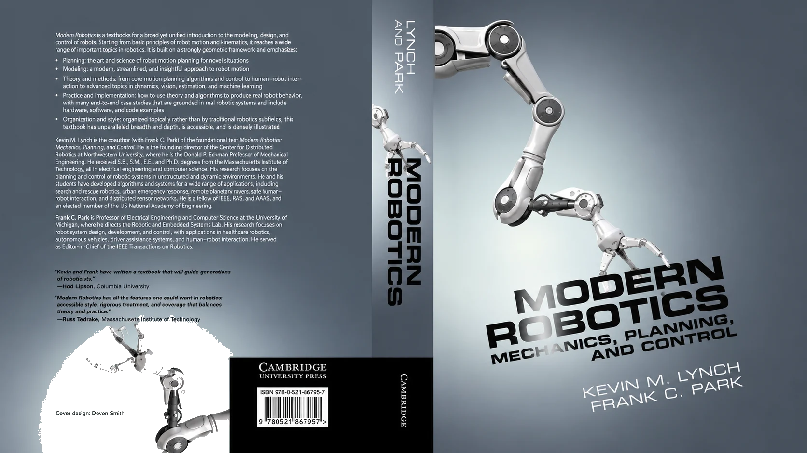
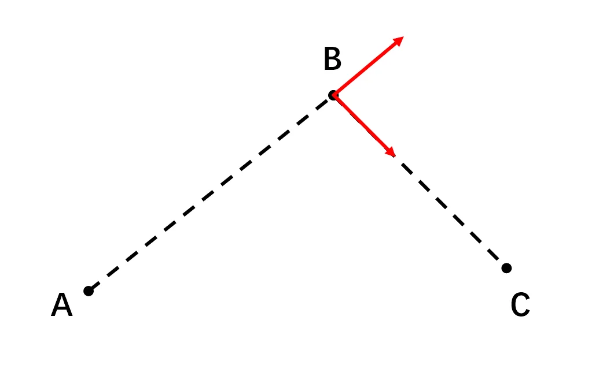
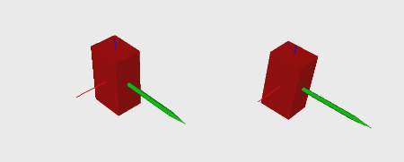
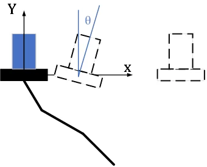
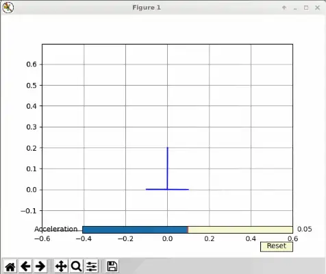
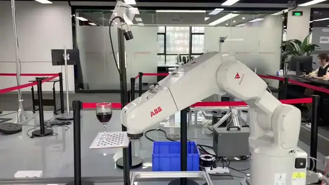

Modern Robotics¶
Remember the questions we left unresolved in the introductory part?
- Why can't you just differentiate the Euler angles to get velocity?
- Can you just take partial derivatives of the forward-kinematics result?
- Why does a three-parameter representation like Euler angles suffer from gimbal lock, forcing us to accept quaternions?
Back then I said: "It's perfectly normal not to have an intuitive grasp of orientation and angular velocity, because they don't live in Cartesian space — you'll only truly understand once you learn more math later."
Now it's time to return to them.
Why we need a new mathematical language¶
The root of the problem: position lives in Euclidean space, but orientation does not.
For two positions \(p_1\) and \(p_2\), the shortest path from \(p_1\) to \(p_2\) is a straight line, and we can happily add, subtract, scale, and interpolate them:
But for orientation — whether you describe it with a rotation matrix, Euler angles, or a quaternion — you cannot use simple vector addition and subtraction to find the shortest path between two orientations. Just like the shortest flight route between two cities on Earth: it isn't the straight line joining them on the map, but a curve — a geodesic.
One step deeper: advanced work uses optimization everywhere, and optimization often needs gradient information. But you find that on these "curved" spaces, much of the time you simply don't know how the gradient should even be defined.
Mathematicians prepared the tools for spaces like these long ago: Lie groups and Lie algebras, which describe objects in the SO(3) and SE(3) spaces very conveniently. This chapter goes in two steps: first we re-learn robot modeling using screws and the product of exponentials (PoE); then we take a step further and use the language of groups to unify everyday operations like interpolation, transition, and constraints. By the end of the chapter, your earlier questions about quaternions, angular velocity, and the like will be swept away.
Some extra math
To get a better handle on what follows, I'd suggest topping up some math first.
-
Numerical methods: much of the time we implement algorithms on a computer, so you have to know the basic numerical methods — numerical differentiation, numerical integration, and so on. For this, see Numerical Methods for Engineers[4].
-
Convex optimization: many problems in this world don't have an easy analytic solution, and we have to compute them with optimization methods. So you have to know how to set up an optimization model and how to solve it in code. Here I recommend Stanford's open course Convex Optimization.
-
Lie groups and Lie algebras: optimization methods often need gradient information, but you find that much of the time you don't know how to define the gradient. Lie groups and Lie algebras are exactly the classic mathematical tool for this — which is what the rest of this chapter is about.
Starting from screws: Modern Robotics¶
Lie groups and Lie algebras can be hard for a lot of engineering students to swallow at first (even the name sounds odd). Here I recommend starting with Modern Robotics, an undergraduate-facing textbook that's written very clearly.[5]
{kind=link}

You can find plenty of information about it online, and there's a matching course on Coursera: Modern Robotics.
After this course, you'll have mastered the screw/PoE modeling approach, and you'll find that robot kinematics and dynamics modeling become remarkably simple and clean.
By this point you've touched a little bit of Lie groups and Lie algebras. From here you can go read a Lie-group textbook aimed at engineers, such as Notes on Differential Geometry and Lie Groups, I & II; then, depending on your own research direction, combine it with the problems in front of you — anything involving optimization or spatial transformations can be paired with Lie groups and Lie algebras.
While we're at it, let me answer a couple of frequently asked questions:
- Which is better, screws or DH? Both matter; neither is "better." DH is intuitive and easy to master, and it's already enough in many situations; screws are closer to the physical essence of rigid-body motion, which helps a lot in analyzing certain problems. It's like asking which is better, "Newton's laws" or "relativity" — just use the right method at the right time. I'd still suggest fully mastering traditional DH and spatial transformations first, then learning screws; the two don't conflict.
- I've heard DH modeling has singularities, while PoE doesn't? To be precise, that's DH's parameterization singularity: when two adjacent joint axes are nearly parallel, the direction of the \(x\) axis in the DH frame is ill-defined, and a tiny assembly error causes wild changes in the DH parameters (in the kinematic-calibration literature, Hayati added an auxiliary parameter \(\beta\) specifically for this, back in 1985). What PoE avoids is this mathematical-expression singularity. The robot's own kinematic singularity, on the other hand, is a configuration-dependent property — as the introductory part explained, it doesn't disappear just because you switch modeling methods.
The language of groups: ⊕ and ⊖¶
At this point, some readers might say: "These screw and PoE methods seem to be just a matter of representation; they don't have much of an advantage."
This is the wrong instinct, and a dangerous one. It's like when we first learn linear algebra and see matrix multiplication and say, "Isn't this just another way of writing a system of linear equations?" — if you reject the new way of thinking from the outset, you'll struggle later when the truly useful tools show up (linear combinations, null space, mappings), and you might even, by rejecting it so early, never get the chance to touch the more advanced tools at all.
So in this section, let's step back and look at the bigger structure, and see what the concept of a "group" actually unifies.
We can describe the state of any object in space with a vector (a point in a high-dimensional space), for example:
- Rigid-body position: \([x, y, z]\);
- Rigid-body pose: \([x, y, z, o_x, o_y, o_z, o_w]\);
- Arm configuration: \([q_1, q_2, \dots, q_6]\).
Take all of an object's states as a set, then define closed basic operations on that set, and you have a group:
- Group addition \(\oplus\): \(A, B \in G,\ A \oplus B \in G\);
- Identity element \(E\): \(A \oplus E = E \oplus A = A\);
- Inverse \(\ominus\): \(A \oplus (\ominus A) = (\ominus A) \oplus A = E\);
- Scalar product \(\odot\): \(\alpha \odot A = A \oplus A \oplus \cdots \oplus A\) ("adding" \(\alpha\) copies of \(A\), then extending \(\alpha\) from the naturals to the reals).
Let's look at two examples. For the joint space of a serial arm, define the group operations with vector addition:
For the orientation of a spatial rigid body, described with a 3×3 rotation matrix and with group operations defined by matrix multiplication — that is, the SO(3) group:
(To compute the \(\alpha\)-th power of a matrix, you need the matrix exponential and matrix logarithm, both derived from the group addition — and that's exactly the "exponential" in "product of exponentials.")
This way, different spaces are unified under the same \(\oplus\) and \(\ominus\) operations, and you'll find a lot of fun things. For instance, the straight-line interpolation between two states can be written uniformly as:
Substitute the joint space, and it's the linear interpolation we know:
Substitute the orientation space:
Plug in the numbers and you'll find it gives the same result as quaternion Slerp and angle-axis interpolation.
This unified interpolation is really just connecting two points along the shortest path on a manifold: in Cartesian space that trajectory is called a straight line; in a Lie group, its name is a geodesic.
Further on you'll see: robot kinematics is just stacking one SE(3) rigid-body pose on top of another; the Lie algebra (screws) describes joint-induced motion easily, and the Adjoint map conveniently converts the Lie algebra between different reference frames; then there's random sampling in motion planning, Jacobian computation in optimization, defining a Riemannian metric on a Lie group to represent kinetic energy... Problems that were a huge hassle with classical methods all come together at once, and everything just falls into place.
A fun little example: computing the average rotation
You measure the same orientation \(n\) times, getting \(n\) rotation matrices, and want the "average rotation." The average is the point in the space whose sum of distances to those \(n\) elements is smallest:
This problem has no analytic solution at present. Several obvious approaches — averaging the three Euler-angle parameters directly, averaging the four quaternion parameters directly, or Log-ing all the rotations into the tangent space, averaging, then Exp-ing back — all fail to compute the average rotation accurately when compared against numerical optimization; only when the rotations are fairly close to one another does averaging the quaternions give an approximately correct result.
{kind=link}
For a detailed write-up and a video demo, see my Zhihu answer, Given several rotation matrices, how do you get the average rotation? (in Chinese).
Application 1: orientation interpolation and trajectory blending¶
Now for the main event of this chapter: two real problems that show what this language can actually do. They share a trait — with traditional methods they're either impossible or very awkward, whereas in the language of groups the solution is almost "obvious."
The first problem comes from trajectory planning. Suppose that, through manual teaching, we've obtained a few waypoints the robot has to pass through. Because of the constraints of the physical world, the robot can't teleport between these waypoints; we have to find a continuous path connecting them.
Because of inertia, neither the magnitude nor the direction of the velocity may change abruptly. If we connect the waypoints with the simplest straight-line interpolation, then at the transition points the velocity direction inevitably jumps — and in execution, either the trajectory deviates from the intended path, or the robot decelerates to 0 at the transition points, hurting both control accuracy and speed.
{kind=link}

The well-read reader will surely have thought of it: the textbooks describe blending at the transition points with an arc or a polynomial curve, so the path's tangent doesn't jump.
So here's the question: we can do this for position, but how do we blend orientation? Or put another way, how are arcs and polynomial curves defined in orientation space?
Someone might say, doesn't the quaternion have Slerp? But we already know from the last section that Slerp is really just straight-line interpolation in orientation space. Have a rigid body pass through three orientations in turn, connected by Slerp, and the angular-velocity direction jumps at the transition point all the same:

But in the language of groups, the answer falls right into place. Recall how a Bezier curve is built: an \(n\)-th-order Bezier curve is nested from \(n\) layers of linear interpolation. We already have a definition of straight-line interpolation in any Lie-group space, so we naturally get Bezier curves (polynomial curves) in any Lie-group space too:
{kind=link}

As the figure shows, the Bezier blend obtained using the Lie-group representation keeps the orientation trajectory's tangent from jumping and makes the angular-velocity direction vary continuously. The academic community (including ICRA and IROS in recent years) keeps publishing results on high-order continuous orientation interpolation; but once you've mastered the language of groups, you can derive this method yourself.
Application 2: high-speed transport under dynamic constraints¶
The second problem is a bit more interesting. One of the main uses of a robot arm is transport. For applications like carrying liquids, we have requirements on the entire transport trajectory, not just on getting the arm from start to finish — for instance, keeping the end-effector level the whole way. And if we raise the bar, wanting the robot to carry it faster, then the trajectory needs to satisfy certain dynamic constraints.
There are two key points here: first, figure out the dynamic constraint that must be satisfied; second, use an appropriate method to build the model.
Let's start with a one-dimensional problem (this is actually one of our coding-test questions): a mechanism that can only move horizontally, plus one rotational degree of freedom, has to carry a cup of water from left to right without spilling it.
{kind=link}

The constraint to satisfy is easy to find — it's middle-school physics: the resultant of the horizontal-motion acceleration and gravity must point perpendicular to the supporting surface.
Then comes the modeling and solving. One method is to set up several constraints and solve it as an optimization problem. But here's another angle: intuitively, this problem has only 1 degree of freedom, not 2 (position and angle) — the horizontal acceleration \(a\) and the tilt angle \(\theta\) are in one-to-one correspondence. So we can define a space \(R(1) \oplus SO(2)\):
- \(R(1)\): the space of the horizontal-motion acceleration \(a\);
- \(SO(2)\): the space of the tilt angle \(\theta\);
- \(\oplus\): defines the relationship between the two subspaces, \(\theta = -\operatorname{arctan2}(a,\ g)\).
Pick any point in this space and the constraint is automatically satisfied. Taking into account that acceleration can't jump, we can sample directly in this space's tangent space (jerk), then walk along the integration chain: jerk → acceleration → velocity → position; and at the same time, acceleration → tilt angle. In effect, no matter what jerk input you give, the mechanism's motion always satisfies the dynamic constraint described above:
{kind=link}

Back to the original problem, we can likewise find a space that always satisfies the dynamic constraint: \(R(3) \oplus SO(3)\). A problem that looked complicated at first (six degrees of freedom, with dynamic constraints) becomes a simple three-degree-of-freedom problem — where, of course, all the integration and other operations are carried out in SE(3) space.
{kind=link}

This idea is of a piece with "planning under constraints" in the later Autonomous Planning chapter: rather than sampling in the full space and then projecting the samples back onto the constraint surface, it's better to construct the constraint manifold directly and sample freely within it.